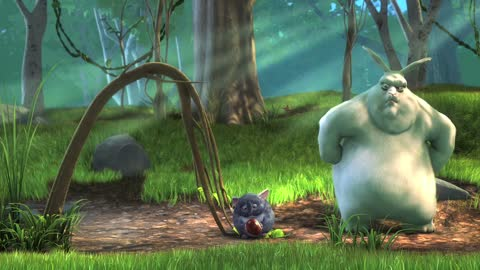

1:29
A cut with 6.1 s of quiet around it.
From a rabbit holding a red apple to a rabbit looking up at a tree.
Calm points
Wick never puts a family note in the middle of a scene. It used to wait for the credits. Now it also knows the moments inside a film where the picture changes and nobody is speaking, and the film waits on that cut while the note is read.
quietcutscalm pointcreditsleft alone
152 shots · 56 quiet stretches · 1 fade through black · credits at 8:10 (Rekognition: 8:10) · 3 calm points
A note sent at the start now waits 1:29, not 8:10. Quiet means below -32.4 dB: fourteen under this film’s own loudness of -18.4 LUFS.
A cut with 6.1 s of quiet around it.
From a rabbit holding a red apple to a rabbit looking up at a tree.
A cut with 2.5 s of quiet around it.
From three animals holding spiky objects to a large white rabbit.

A cut with 8.4 s of quiet around it.
© Blender Foundation | peach.blender.org · Creative Commons Attribution 3.0
230 shots · 114 quiet stretches · 1 fade through black · credits at 12:24 (Rekognition: 12:27) · 4 calm points
A note sent at the start now waits 3:04, not 12:24. Quiet means below -30.7 dB: fourteen under this film’s own loudness of -16.7 LUFS.
A cut with 4.0 s of quiet around it.
From a small creature sitting on a rooftop to a woman with pink hair standing in a room.
A cut with 6.6 s of quiet around it.
From a woman standing on a rooftop to a woman standing in front of a building.
A cut with 7.3 s of quiet around it.
From a woman standing in a dark area to a cave with a bright moon.
A cut with 18.8 s of quiet around it.
From a dark cave with rocks and a tree to a tree with a small figure.
© Blender Foundation | durian.blender.org · Creative Commons Attribution 3.0
188 shots · 6 quiet stretches · 1 fade through black · credits at 9:48 (Rekognition: 9:49) · 1 calm point
A note sent at the start now waits 7:41, not 9:48. Quiet means below -26.2 dB: fourteen under this film’s own loudness of -12.2 LUFS.
A cut with 1.2 s of quiet around it.
From a boy looking at a robot to a group of people working in a factory.
© Blender Foundation | mango.blender.org · Creative Commons Attribution 3.0